Cinq schémas interactifs
Chaque schéma s'ouvre dans une page autonome : zoom, recherche, vues guidées, thème clair ou sombre, export en image.
Les 15 onglets, du signal à la décision
Accueil → Décider → Comprendre → Simuler → Anticiper → Copiloter, avec les zooms métier, le contexte et les onglets de confiance.
Ouvrir le schéma → Flux de donnéesDes données synthétiques aux onglets
Trois générateurs Python, 11 fichiers sources, l'enrichissement IA, 19 fichiers rechargés, 8 contrôles, puis la restitution.
Ouvrir le schéma → Cycle de vieUn dossier de loyers impayés
Du premier impayé à la clôture : voie amiable, voie assurance (commandement, déclaration, indemnisation, recouvrement) et cas lourd.
Ouvrir le schéma → SéquenceUne question au copilote
Règles d'abord, outils en lecture seule pour les chiffres, documents approuvés sinon ; le texte est rejeté si un chiffre n'est pas sourcé.
Ouvrir le schéma → ArchitectureDu poste local à Qlik Cloud et à Claude
Qlik Sense Desktop et le pont local, l'application importée dans Qlik Cloud, Claude relié par le connecteur Qlik MCP.
Ouvrir le schéma →Les libellés de l'interface du lecteur (« Guided views », « Legend »…) restent en anglais.
Les 15 onglets de l'application Qlik Sense
Captures de l'application sur données synthétiques. Cliquer sur une capture l'ouvre en taille réelle.

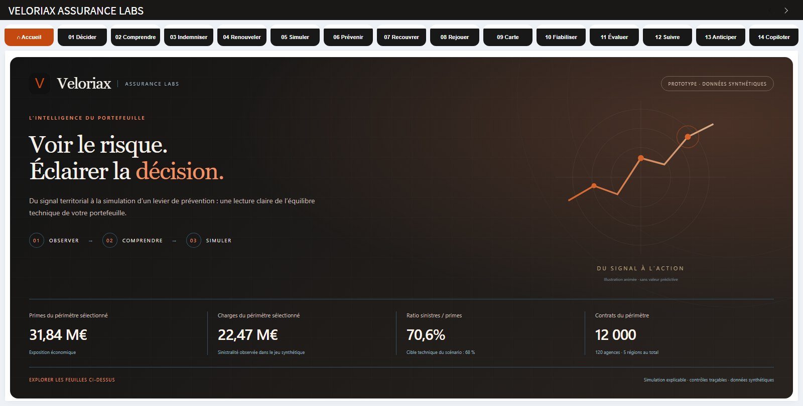

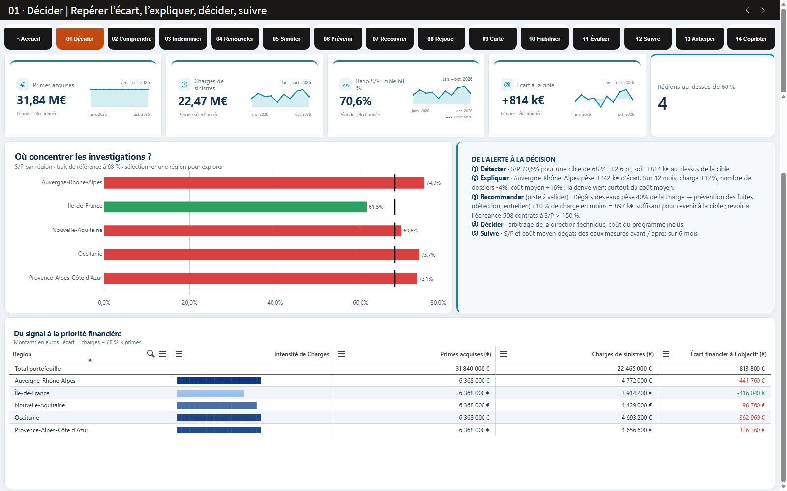

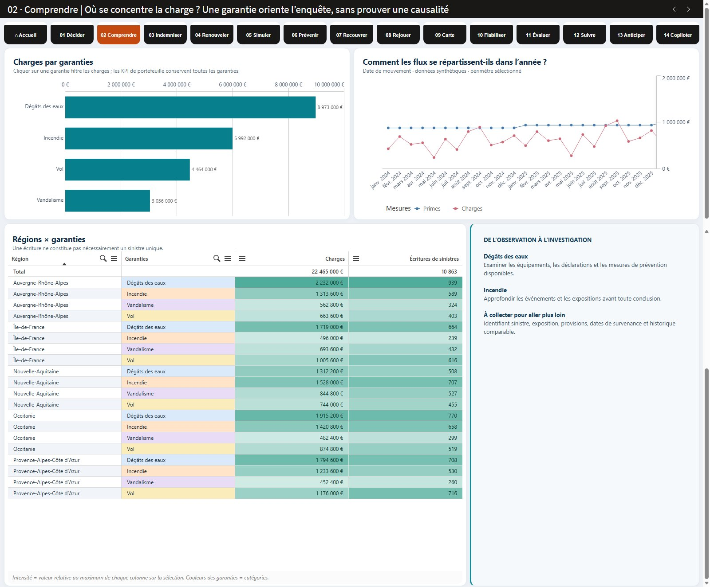

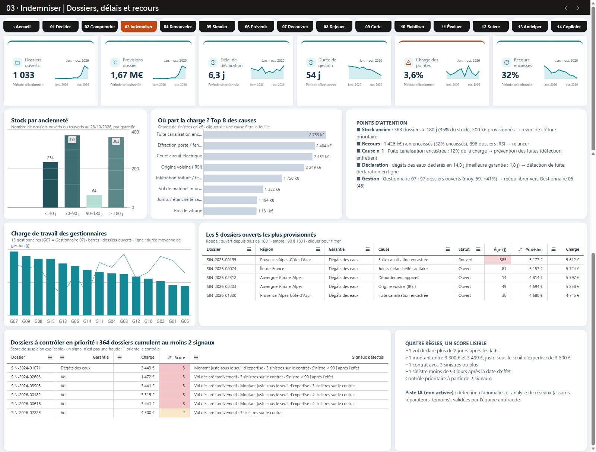

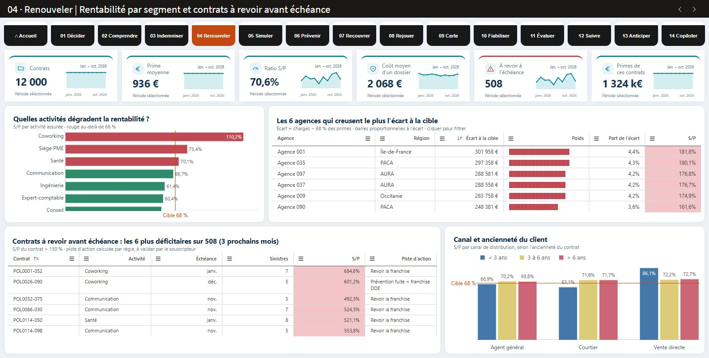

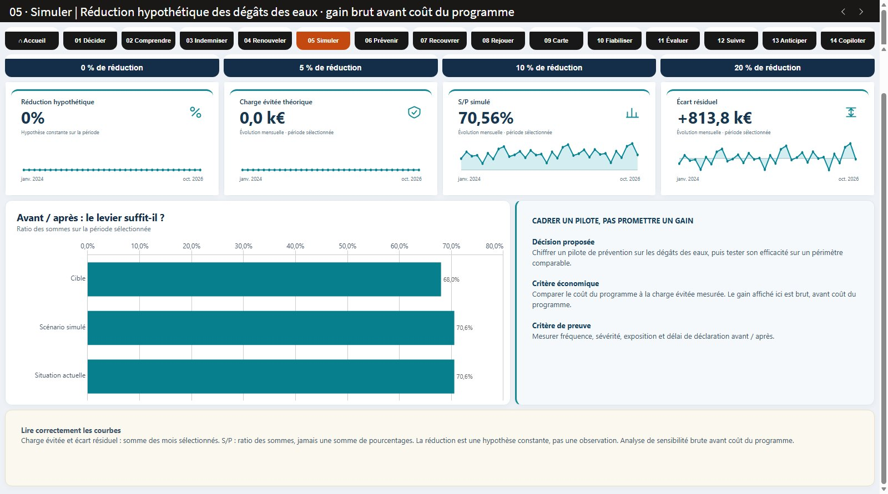

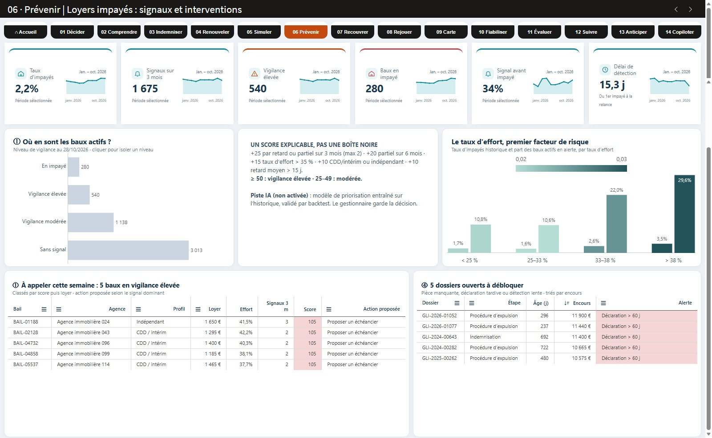

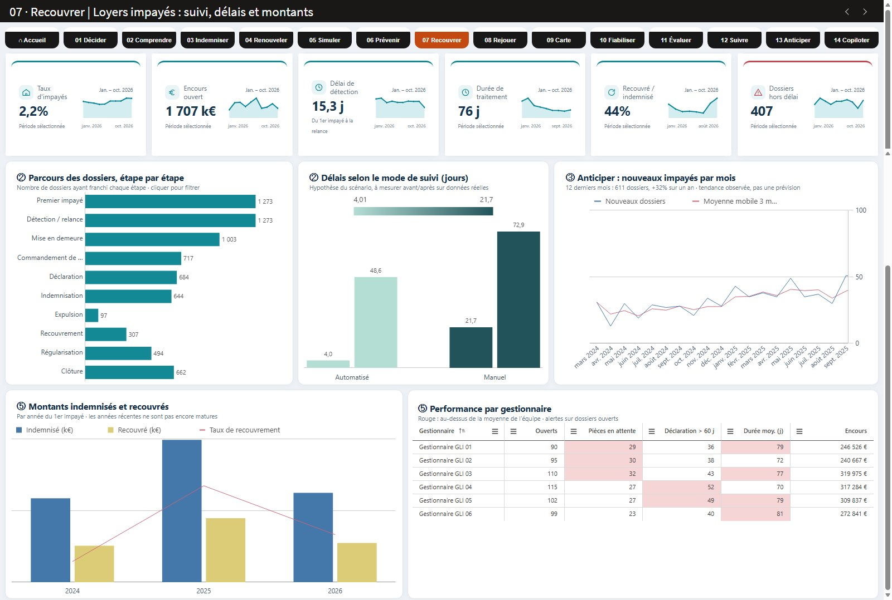

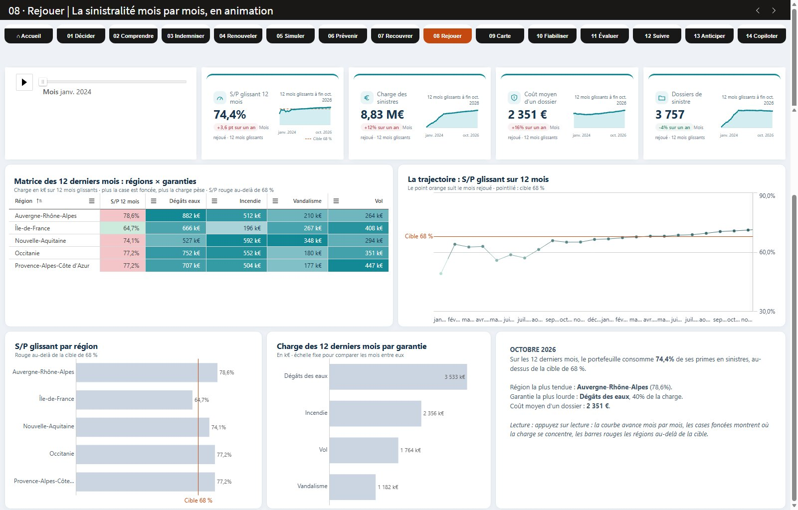

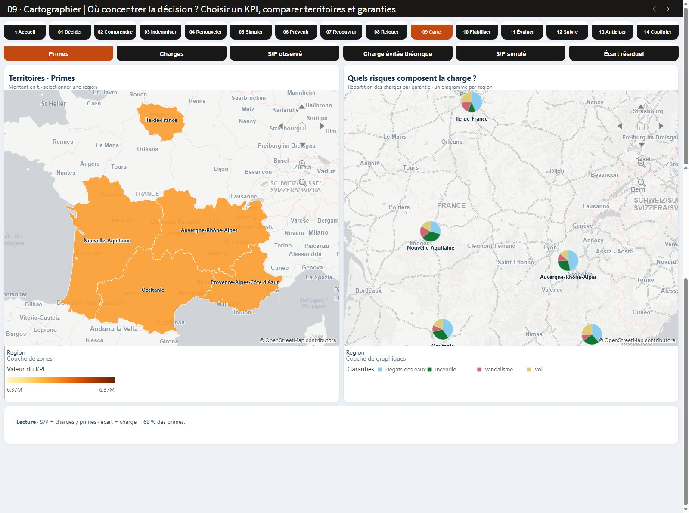

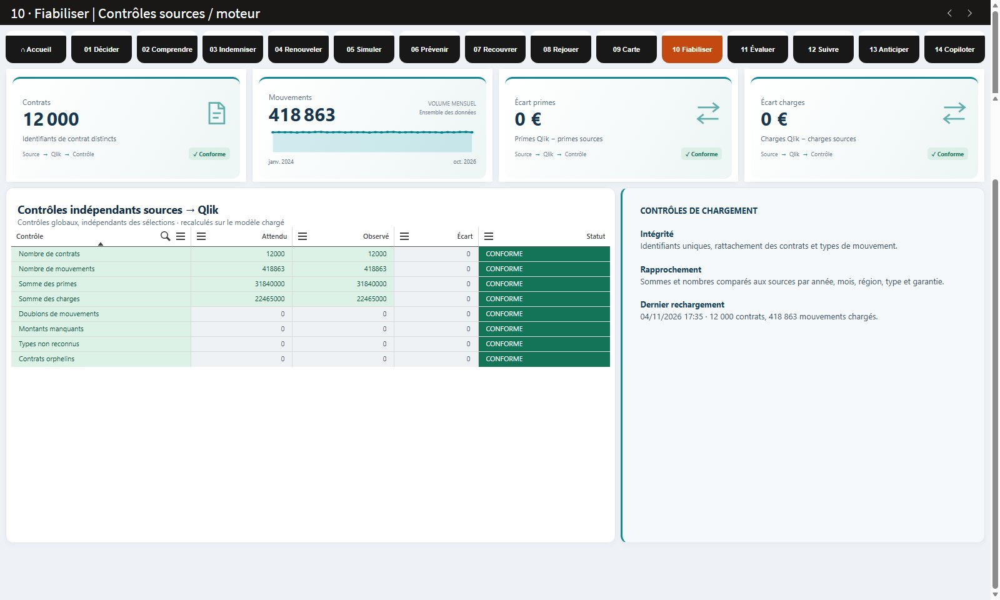

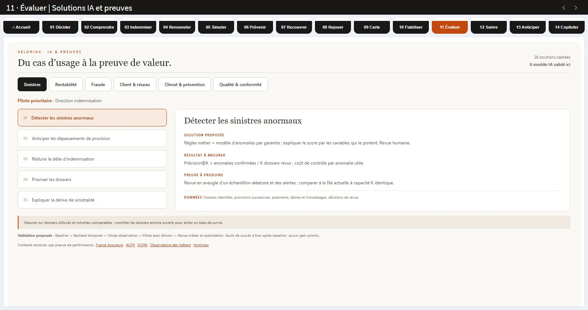

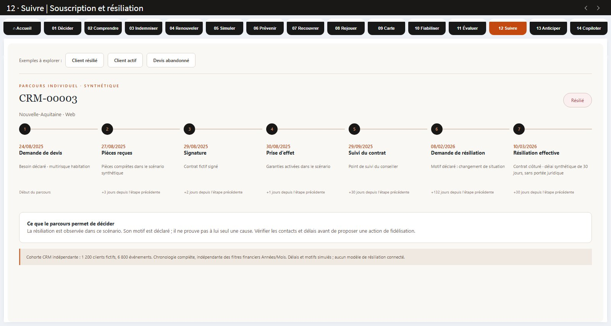

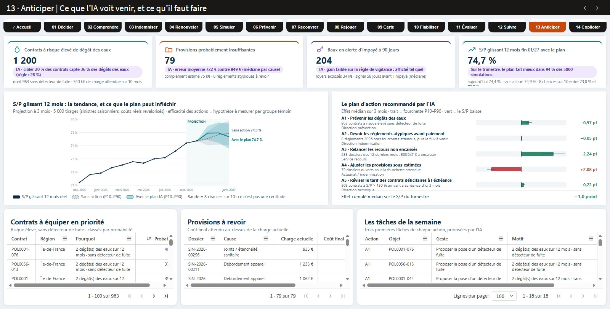

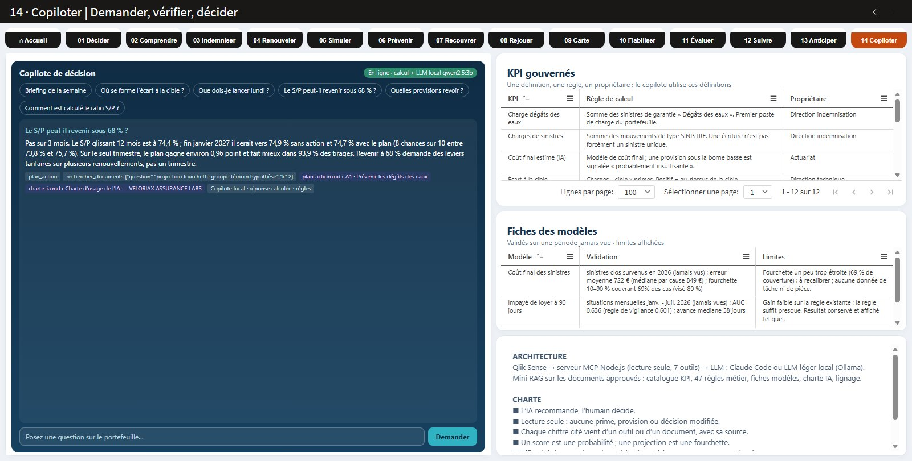